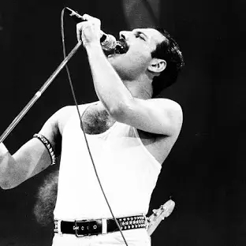
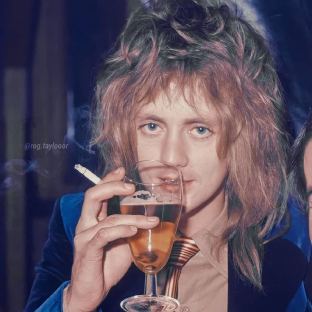
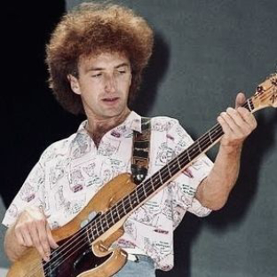
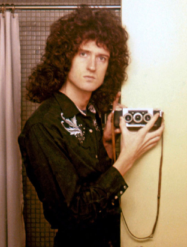

Freddie Mercury
Freddie Mercury (born Farrokh Bulsara; 5 September 1946-24 November 1991) was a British singer and songwriter who achieved worldwide fame as the lead vocalist and pianist of the rock band Queen. Regarded as one of the greatest singers in the history of rock music, he was known for his flamboyant stage persona and four-octave vocal range. Mercury defied the conventions of a rock frontman with his theatrical style, influencing the artistic direction of Queen. Born in 1946 in Zanzibar to Parsi-Indian parents, Mercury attended English boarding schools in India from the age of eight and returned to Zanzibar after secondary school. In 1964, his family fled the Zanzibar Revolution, moving to Middlesex, England. Having previously studied and written music, he formed Queen in 1970 with guitarist Brian May and drummer Roger Taylor.
Mercury wrote numerous hits for Queen, including "Killer Queen", "Bohemian Rhapsody", "Somebody to Love", "We Are the Champions", "Don't Stop Me Now" and "Crazy Little Thing Called Love". His charismatic stage performances often saw him interact with the audience, as displayed at the 1985 Live Aid concert. He also led a solo career and was a producer and guest musician for other artists. Mercury was diagnosed with AIDS in 1987. He continued to record with Queen, and was posthumously featured on their final album, Made in Heaven (1995). In 1991, the day after publicly announcing his diagnosis, he died from complications of the disease at the age of 45. In 1992, a concert in tribute to him was held at Wembley Stadium, in benefit of AIDS awareness. As a member of Queen, Mercury was posthumously inducted into the Rock and Roll Hall of Fame in 2001, the Songwriters Hall of Fame in 2003, and the UK Music Hall of Fame in 2004. In 1990, he and the other Queen members received the Brit Award for Outstanding Contribution to British Music. One year after his death, Mercury received the same award individually. In 2005, Queen were awarded an Ivor Novello Award for Outstanding Song Collection from the British Academy of Songwriters, Composers, and Authors. In 2002, Mercury was voted number 58 in the BBC's poll of the 100 Greatest Britons.
Roger Taylor
Roger Meddows Taylor OBE (born 26 July 1949) is an English musician, songwriter and record producer. He achieved international fame as the drummer and backing vocalist for the rock band Queen.As a drummer, Taylor was recognised early in his career for his unique sound and was voted the eighth-greatest drummer in classic rock music history in a listener poll conducted by Planet Rock in 2005. He was inducted into the Rock and Roll Hall of Fame in 2001 as a member of Queen. As a songwriter, Taylor composed at least one track on every Queen album, and often sang lead vocals on his own compositions. He wrote or co-wrote three UK number ones ("These Are the Days of Our Lives", "Innuendo" and "Under Pressure") and wrote a further five major hits ("Radio Ga Ga", "A Kind of Magic", "Heaven for Everyone", "Breakthru" and "The Invisible Man").
He has collaborated with such artists as Eric Clapton, Roger Waters, Roger Daltrey, Robert Plant, Phil Collins, Genesis, Jimmy Nail, Kansas, Elton John, Gary Numan, Shakin' Stevens, Foo Fighters, Al Stewart, Steve Vai, Yoshiki, Cyndi Almouzni and Bon Jovi. As a producer, he has produced albums by Virginia Wolf, Jimmy Nail and Magnum. As a singer, Taylor employs a falsetto vocal range. During the 1980s, in addition to his work with Queen, he formed a parallel band known as the Cross, in which he was the lead singer and rhythm guitarist. During the early 1980s, Taylor was also a panellist on the UK quiz show Pop Quiz, hosted by Mike Read. In 2014, he appeared in The Life of Rock with Brian Pern as himself.
John Deacon
John Richard Deacon (born 19 August 1951) is an English retired musician who was the bass guitarist for the rock band Queen. He wrote several songs for the group, including Top 10 hits "You're My Best Friend", "Another One Bites the Dust" and "I Want to Break Free"; co-wrote "Under Pressure", "Friends Will Be Friends" and "One Vision"; and he was involved in the band's financial management. Deacon grew up in Oadby, Leicestershire, playing bass guitar in a local band, The Opposition, before moving to study electronics at Chelsea College, London. He joined Queen in 1971 on the strength of his musical and electronic skills, particularly the homemade Deacy Amp which guitarist Brian May used to create guitar orchestras throughout Queen's career. From the third album, Sheer Heart Attack, onwards, he wrote at least one song per album, several of which became hits.
As well as bass guitar, Deacon played some guitar, keyboards and piano on Queen's studio work. After the death of lead singer Freddie Mercury in 1991 and the following year's Tribute Concert, Deacon performed only sporadically with the remaining members of Queen before retiring from the music industry in 1997 after recording "No-One but You (Only the Good Die Young)". He has not performed on any of the other projects that the two remaining members, Brian May and Roger Taylor, have put together. He was inducted into the Rock and Roll Hall of Fame as a member of Queen in 2001 and into the Songwriters Hall of Fame in 2003.
Brain May
Sir Brian Harold May CBE (born 19 July 1947) is an English musician, songwriter, record producer, animal welfare activist and astrophysicist. He achieved worldwide fame as the lead guitarist and backing vocalist of the rock band Queen, which he co-founded with singer Freddie Mercury and drummer Roger Taylor. His guitar work and songwriting contributions helped Queen become one of the most successful acts in music history. May previously performed with Taylor in the progressive rock band Smile, which he had joined while he was at university. After Mercury joined to form Queen in 1970, bass guitarist John Deacon completed the line-up in 1971. They became one of the biggest rock bands in the world with the success of the album A Night at the Opera and its single "Bohemian Rhapsody". From the mid-1970s until 1986, Queen played at some of the biggest venues in the world, including an acclaimed performance at Live Aid in 1985 As a member of Queen, May became regarded as a virtuoso musician and was identified with a distinctive sound created through his layered guitar work, often using a home-built electric guitar called the Red Special. May wrote numerous hits for Queen, including "We Will Rock You", "I Want It All", "Fat Bottomed Girls", "Flash", "Hammer to Fall", "Save Me", "Who Wants to Live Forever" and "The Show Must Go On".
Following the death of Mercury in 1991, aside from the 1992 tribute concert, the release of Made in Heaven (1995) and the 1997 tribute single to Mercury, "No-One but You (Only the Good Die Young)" (written by May), Queen were put on hiatus for several years but were eventually reconvened by May and Taylor for further performances featuring other vocalists. In 2005, a Planet Rock poll saw May voted the seventh-greatest guitarist of all time. He was ranked at No. 33 on Rolling Stone's 2023 list of 250 greatest guitarists of all time. In 2012, he was further ranked the second-greatest guitarist in a Guitar World magazine readers poll. In 2001, May was inducted into the Rock and Roll Hall of Fame as a member of Queen and, in 2018, the band received the Grammy Lifetime Achievement Award. May was appointed a Commander of the Most Excellent Order of the British Empire (CBE) in 2005 for services to the music industry and for charity work.May earned a PhD degree in astrophysics from Imperial College London in 2007. and was Chancellor of Liverpool John Moores University from 2008 to 2013.He was a "science team collaborator" with NASA's New Horizons Pluto mission. He is also a co-founder of the awareness campaign Asteroid Day.Asteroid 52665 Brianmay was named after him. In 2023, May contributed to NASA's OSIRIS-REx mission, the agency's first successful collection and earth delivery of samples directly from an asteroid (the asteroid Bennu). May is also an animal welfare activist, campaigning against fox hunting and the culling of badgers in the UK.May was knighted by King Charles III in the 2023 New Year Honours for services to music and charity.